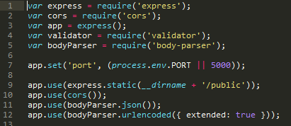

Assignment 4 - mdilla01
Introduction
This product is a web service that allows passengers to find drivers in their area, and vice versa. The program uses Google Maps API to identify the users location, and displays the user along with other users (either drivers or passengers depending on what the user is) on a map.
I was hired as a security consultant to find any and all security and privacy problems in the program. These may include but are not limited to Cross Site Scripting, hidden fields, and bypassing restrictions on input choices
Methodology
First, I conducted a "black box" test of the product. This consisted of my attempts to attack the site without reading the source code. I attacked commonly vulnerable areas of the program, such as input fields and queries.
Next, I conducted a "white box" test of the product. This involved a review of the product’s source code. This is where I would find vulnerability issues such as hidden fields.
Abstract of Findings
There are a few issues that make this web application unsafe for launch. These issues involve the security and vulnerability of user data and the server. Hackers could attack users through cross-site scripting and user impersonation. In addition, hackers can access the server data directly, because Cross-Origin Resource Sharing is enabled for all requests.
Issues Found
- XSS in /submit route input field username
- Severity: High - Someone could inject javascript into the database, causing the javascript to run when a user loads the route of the program. Users could be subject to malicious data and websites without knowing they are being attacked.
- The problem was found using curl, where javscript was substituted into the username input field. The code used is seen here:
As you can see below, this resulted in a pop-up on users' screens when accessing the / route. Though this is a pretty mild hack, somebody could inject any javascript they wanted, so real attacks could be much more deceitful.
- This vulnerability could be fixed by checking users' input and removing any special characters like "<" or ">".
- User Authentication in /submit
- Severity: Low - To post data, a user is only required to input a user name with their data. This could result in people claiming to be someone they are not. In addition, to edit someone else's information, all someone needs to know is the person's username.
- The problem was found by looking at the source code of the server. I found that when someone inputs the same username, the data is automatically updated without verifying that the original person is making the update. This can be seen from this code snippet:
- This vulnerability can be fixed by requiring a password for all users who are attempting to input or access data.
- CORS enabled for all requests
- Severity: Medium - This allows anyone to make server requests to index.js. This can be problematic because attackers may be able to access and manipulate the servers and their data directly.
- The vulnerability was found by looking at the source code of the server. It uses a CORS dependency, but doesn't configure any of the CORS options to restrict who can access the server. Instead, it makes enables CORS for all requests. This can be seen in lines 2 and 10 in the code below

- This problem can be fixed by restricting who can access the server using CORS. This can be done by creating a whitelist of allowed origins, and then editing the CORS Options, as seen in the example below (taken from www.npmjs.com):
Conclusion
While these issues are very important to the security of both the users and the server itself, they are relatively easy to fix. The application should not be released until these flaws are taken care of. These should be reatively quick and inexpensive. As a general rule, you should never trust user input. Therefore, if you decide to add more features in the future, always be sure to check users' input for suspicious characters.
References
https://www.npmjs.com/package/cors